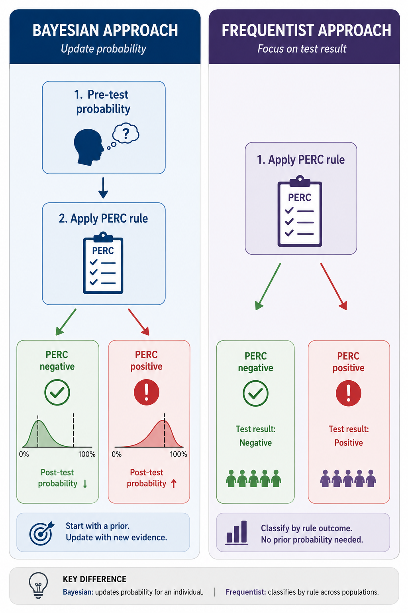

Updating our probabilities in medicine is something we do inherently all the time. This type of thinking gets to the heart of the difference between Bayesian and frequentist approaches.

Pretest probability matters because no test is perfectly specific or perfectly sensitive. Testing a very low-risk population creates more false alarms, while ignoring a high-risk presentation can leave dangerous disease behind.